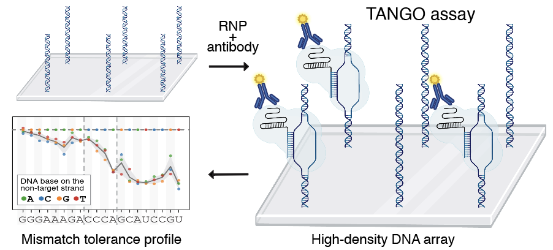
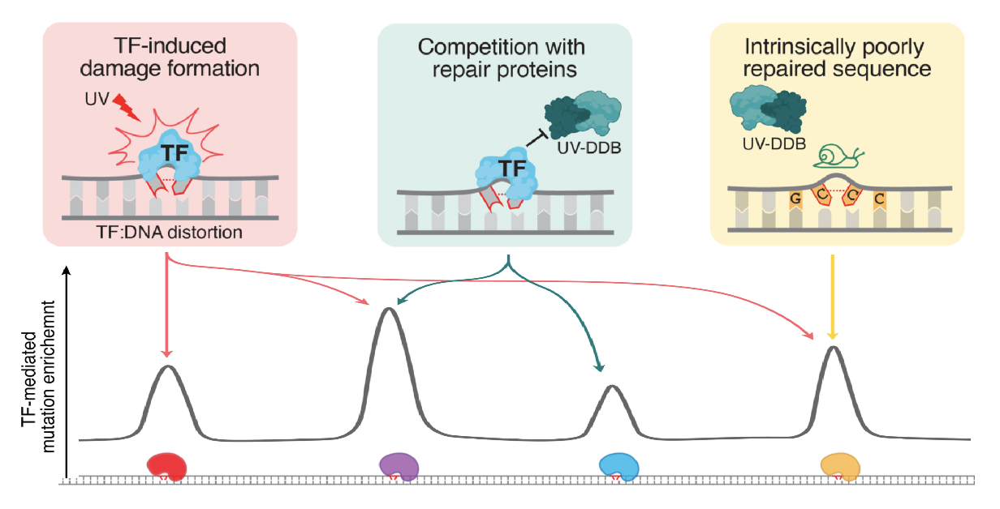
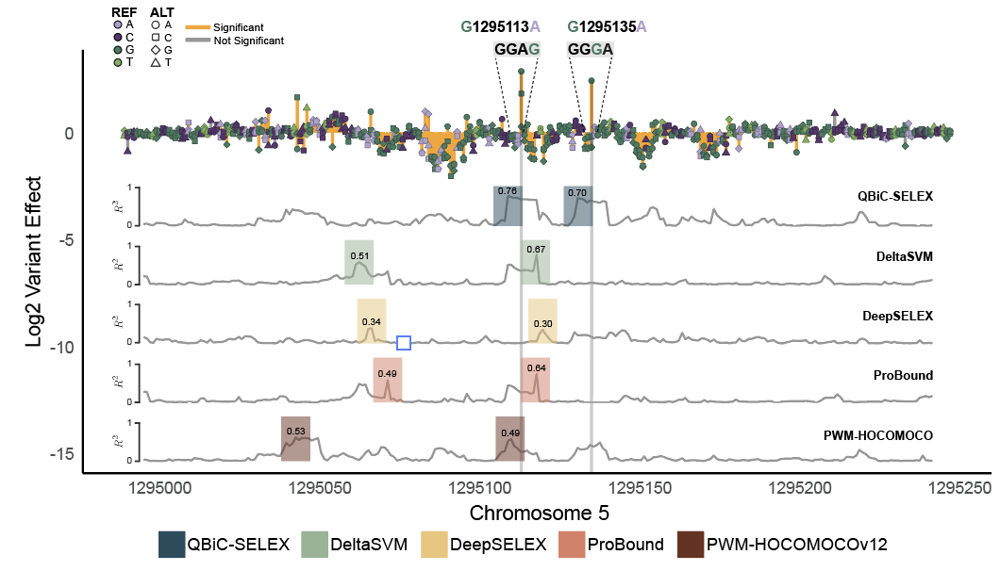

dCas proteins and epigenome editing
We develop highly sensitive high-throughput assays to decipher the DNA recognition properties of dCas9 and dCas12a, with the goal of improving the precision of genome and epigenome editing.
What we do
We investigate how transcription factors regulate gene expression, how their competition with DNA repair leads to increased mutagenesis, and how gene regulation can be modulated using CRISPR-Cas systems.
We do this by integrating high-throughput experiments, quantitative biochemistry, genomic analysis, machine learning, and cell-based studies. We oftentimes use custom-designed cell-free systems and computational analyses/modeling to formulate mechanistic hypotheses, which we then test in eukaryotic cellular systems.

We develop highly sensitive high-throughput assays to decipher the DNA recognition properties of dCas9 and dCas12a, with the goal of improving the precision of genome and epigenome editing.

We investigate how transcription factors influence DNA mutagenesis at their binding sites by modulating DNA lesion formation and by directly competing with repair enzymes for the recognition of DNA lesions.

We study how human transcription factors (TFs) find their genomic targets despite the complexity of the nuclear environment, and how sequence variation changes TF binding and gene regulation.